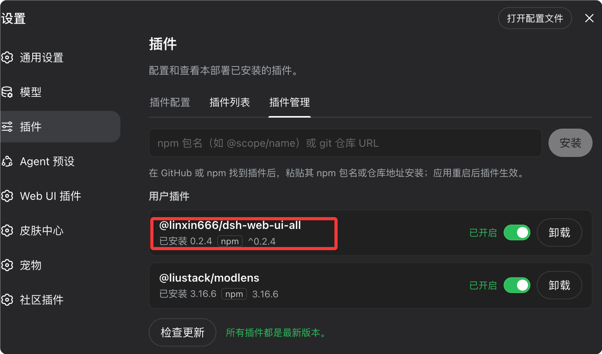
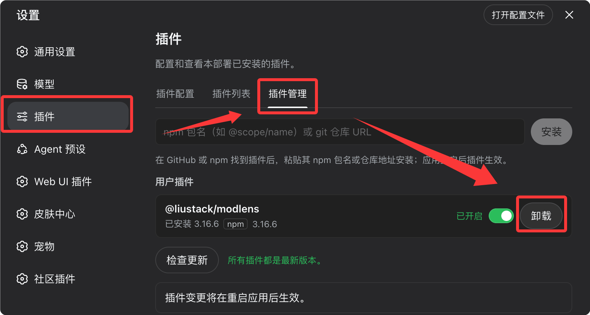

DeepSeek Harness 社区插件
DeepSeek Harness（简称 dsh）的核心设计是 Everything is a Plugin（一切皆插件）。
在 dsh 中，模型适配器、工具注册、会话日志、Agent Loop、沙箱、存储、任务调度、UI，甚至权限策略，都可以作为 Cordis 插件存在。
Cordis 是一个轻量级的插件化应用框架，统一负责插件的注册、依赖解析与生命周期管理。
DeepSeek Harness 并不是一个功能已经写死的 Agent，而更像是一套可以不断拼装的 Agent 基础设施。
传统 LLM Agent 的结构通常比较固定，Prompt、模型、Agent、工具依次串联，能力大多封装在框架核心里。

更准确的理解方式是：dsh 不是一个自带很多功能的 Agent，而是一个能够通过插件不断组装 Agent 能力的运行时。
我们不需要修改 dsh 的核心源码，就可以改变它的行为。
常见的需求与对应做法如下：
| 需求 | 做法 | 对应插件示例 |
|---|---|---|
| 换一套界面 | 安装 UI 插件 | dsh-web-ui、dsh-TUI |
| 增加视觉能力 | 安装视觉插件 | modlens、dsh-vision-toolkit |
| 多 Agent 协作 | 安装 Agent Teams 插件 | dsh-agent-teams |
| 浏览器自动化 | 安装 Browser 插件 | dsh-browser、BrowserSkill |
| 上下文管理 | 安装 Context 插件 | dsh-context |
插件之间还可以互相叠加，形成完全不同的工作环境。
在 dsh 中，模型适配器、工具注册表、会话日志、Agent Loop、沙箱、存储、调度、UI，甚至权限策略，全部以 Cordis 插件形式存在。
下图展示了 dsh 的整体插件化结构，宿主只负责组织能力，能力本身全部由插件提供：

Profile：决定插件运行在哪套环境
dsh 的插件安装和普通 npm 包、Python 包有一个明显区别：插件装好之后，运行在哪一套环境中由 Profile 决定。
同一个 dsh 可以根据使用场景加载不同的插件组合，不同 Profile 之间互不干扰。
常用的三种 Profile 如下：
| Profile | 形态 | 适用场景 |
|---|---|---|
| web | 浏览器访问的 Web 工作台 | 日常交互开发、任务看板、远程访问 |
| tui | 终端全屏界面 | SSH 远程开发、习惯命令行的用户 |
| headless | 无界面后台运行 | 自动化脚本、CI 集成、定时任务 |
例如一个典型的 Web Profile 插件组合：
Web Profile ├── dsh-web-ui # Web 工作台 ├── dsh-better-sidebar # 侧边栏工作区 ├── modlens # 视觉能力 └── dsh-market # 插件市场
而终端用户可能只保留：
TUI Profile └── dsh-TUI # 全屏终端界面
插件安装
dsh 为插件提供了统一的安装入口，一条命令即可完成。
# 安装插件到 web profile（--profile 指定目标环境，必填） dsh plugin --profile web add <源> # 安装插件到 tui 终端环境 dsh plugin --profile tui add <源>
以安装 dsh-web-ui（开源地址https://github.com/zhu1090093659/dsh-web-ui） 为例：
dsh plugin --profile web add @linxin666/dsh-web-ui-all@latest
安装之后，重启后，我们可以在设置的插件列表中查看已安装的插件：

然后我们可以在左侧列表查看插件的功能，试装皮肤：

一套完整的安装流程通常是：
选择 Profile
↓
安装插件
↓
检查依赖 / README
↓
重启对应服务
↓
验证插件是否加载
如果要卸载插件，只要在设置菜单的插件列表中点击卸载按钮即可：

点击确认卸载即可完成卸载：

接下来我们介绍一些目前已经开源的一些插件，更多社区插件可以关注：https://github.com/topics/dsh-plugin。
UI 增强与工作台
这一类插件解决「界面不够好用」的问题，把 dsh 从一个命令行工具升级成接近 IDE 的完整工作台。
其中 dsh-web-ui 与 DSH-better-sidebar 是社区人气最高的组合，前者补齐 Web 界面的功能面，后者提供常驻侧边栏。
| 插件 | 简介 | 安装命令 |
|---|---|---|
| dsh-web-ui | Web UI 全家桶：任务看板、Git 图谱、右侧面板、远程移动端、桌宠、实时 Token 统计、皮肤中心 | dsh plugin --profile web add github:zhu1090093659/dsh-web-ui |
| DSH-better-sidebar | 完整侧边栏工作台：文件树 / 编辑器、终端、Git、子代理，支持第三方插件注册新 Tab | dsh plugin --profile web add dsh-better-sidebar |
| dsh-TUI | Claude Code 风格全屏终端 TUI：流式思考、双击 Esc 回溯、状态栏、模型切换 | dsh plugin --profile tui add @deepseek-harness-tui/dsh-tui |
| dsh-at-file | 输入框 @ 快速搜索并引用工作区文件 / 目录 | dsh plugin --profile web add github:omdsh-dev/dsh-at-file |
dsh-web-ui 并不只是简单换一个界面，而是围绕 Agent 工作流补齐任务看板、Git 图谱等工作台能力。
DSH-better-sidebar 解决的则是「工作区组织能力」的问题，适合想把 dsh 做成「AI IDE」的用户。
dsh-at-file 的用法非常直观，在输入框输入 @ 即可搜索并引用工作区文件：
请分析 @runoob-demo/src/main.py 比较 @runoob-demo/src/api 和 @runoob-demo/src/service
对代码 Agent 来说，这种交互方式比手动复制文件内容自然得多。
终端用户则更推荐 dsh-TUI，它在终端里提供流式输出与消息回溯，体验接近 Claude Code。
视觉与多模态
dsh 可以通过插件把视觉处理能力「外挂」给原本以文本为中心的 Agent。
modlens 的核心思路，是把图片转换成结构化的视觉证据，再交给文本模型处理。
同样是粘贴一张网页截图，得到的不是「这是一张网页截图」，而是 OCR 文本、布局信息、坐标与语义标签的组合。
| 插件 | 简介 | 安装命令 |
|---|---|---|
| modlens | 纯文本模型秒变多模态：粘贴图片输出结构化 OCR、版面与语义证据 | dsh plugin --profile web add @liustack/modlens |
| dsh-vision-toolkit | 完整视觉工具箱：意图问答、长截图 OCR、UI 还原、grounding、像素 diff | dsh plugin --profile web add @anionex/dsh-vision-toolkit |
| dsh-vision-router | 免费视觉链与像素级工具，支持本地 Ollama / LM Studio | dsh plugin --profile web add dsh-vision-router |
这类插件适合 OCR、网页截图分析、文档理解、图片内容提取等任务。
如果主要工作涉及前端开发、UI 复刻、截图分析，dsh-vision-toolkit 会比单纯 OCR 更实用。
希望视觉能力完全本地化部署的用户，可以重点关注 dsh-vision-router。
皮肤、主题与桌宠
这一类插件不一定提高 Agent 的核心能力，但最能体现「一切皆插件」的彻底程度：连皮肤和桌宠都是插件。
| 插件 | 简介 | 安装命令 |
|---|---|---|
| dsh-deep-whale | 鲸鱼娘皮肤系列（深海女仆工坊等），支持亮 / 暗色模式 | dsh plugin --profile web add github:Small-tailqwq/dsh-deep-whale |
| whale-girl / dsh-pet 系列 | 可拖拽、喂食、互动的桌宠小鲸鱼（社区多个仓库） | 按各仓库 README 安装 |
如果觉得 Agent 工作台太严肃，这类插件基本就是「插件化」的娱乐证明。
多 Agent 与工作流
如果说 UI 插件解决的是「怎么使用 dsh」，那么多 Agent 插件解决的是「怎么让多个 Agent 一起干活」。
dsh-agent-teams 的思路非常直观：当前会话充当队长，把任务拆给多个可以继续对话的子 Agent。

| 插件 | 简介 | 安装命令 |
|---|---|---|
| dsh-agent-teams | 当前会话变队长：创建可续聊子 Agent、带依赖任务、自动调度、实时面板 | dsh plugin --profile web add @nanmicoder/dsh-agent-teams |
| dsh_workflow | 可生成、保存、恢复、观察、治理的 Workflow 层 | dsh plugin --profile web add "github:dsh-external/dsh_workflow#main" |
两者的分工可以这样理解：agent-teams 解决「多个 Agent 一起工作」，workflow 解决「把 Agent 工作流程固定下来并反复执行」。
组合起来，可以形成一条完整的执行链：
需求 ↓ Leader Agent（任务拆分） ├── Frontend Agent ├── Backend Agent ├── Test Agent └── Review Agent ↓ Workflow（流程固化、反复执行） ↓ 最终结果
这时 dsh 开始从「AI 帮我写代码」，逐渐变成「AI Agent 自己组织多个执行单元完成任务」。
浏览器与自动化
Agent 真正进入生产环境之后，仅仅能读写代码通常是不够的，还需要打开网页、读取页面、点击输入、带着登录态执行任务。
与无头浏览器方案不同，dsh-browser 直接驱动本机 Chrome，原有的登录状态和 Cookie 全部保留，Agent 不必每次从零登录。
| 插件 | 简介 | 安装命令 |
|---|---|---|
| dsh-browser | 操控真实 Chrome（保留登录 / Cookie），结构化文本控制网页 | 仓库提供一键安装脚本（含浏览器扩展） |
| BrowserSkill | 腾讯开源的真实已登录浏览器自动化方案（CLI + 扩展） | 按仓库说明安装 |
浏览器插件适合网站自动化、后台操作、数据采集、Web 测试等需要登录态的任务。
这类插件通常还涉及浏览器扩展等额外组件，建议按官方脚本或 README 安装，而不是手动拼命令。
记忆、上下文与会话迁移
Agent 用得越久，真正的问题往往不是模型不够聪明，而是上下文越来越乱。
这一类插件围绕「上下文」做文章：要么把别处的会话搬进来，要么把当前上下文的构成看清楚。
| 插件 | 简介 | 安装命令 |
|---|---|---|
| dsh-chat-import | 从 Claude Code / Codex / ChatGPT / Cursor / Gemini 等无损导入历史会话 | dsh plugin --profile web add dsh-chat-import |
| dsh-context | 上下文组成、Token 趋势、压缩 / 裁剪可视化面板 | dsh plugin --profile web add dsh-context |
如果之前已经大量使用其他 Coding Agent，dsh-chat-import 这类迁移插件会非常有价值。
对于长时间运行的 Coding Agent，上下文管理的重要性会越来越高。
Agent 的效果很大程度上取决于「模型能力 + 上下文质量 + 工具能力 + 任务状态」，而不是单纯看模型 benchmark。
插件发现与管理
当插件数量越来越多以后，又会产生一个新的问题：插件在哪里找。
dsh-market 在设置页内置了一个插件市场，支持搜索、分类与一键安装更新；dsh-find-plugin 更进一步，直接在会话里用自然语言找插件。
| 插件 | 简介 | 安装命令 |
|---|---|---|
| dsh-market / dshmarket | 设置页内置插件市场：搜索、分类、一键安装 / 更新 | dsh plugin --profile web add dshmarket |
| dsh-find-plugin | 会话内自然语言搜索插件，返回描述与安装命令 | dsh plugin --profile web add dsh-find-plugin |
比如直接提问「有没有可以分析网页截图的插件」，它会返回插件名称、功能描述和安装命令。
如果准备长期使用 dsh，建议优先研究插件市场，而不是一开始手动搜几十个 GitHub 仓库。
「寻找插件」本身也是插件，这正是 Everything is a Plugin 设计思路的直观体现。
其他实用插件
除了上面的核心类别，社区还有一些关注度不低、不易归类的项目。
| 插件 | 简介 | 安装命令 |
|---|---|---|
| deepseek-harness 桌面版 | 桌面客户端，一键启动 | 下载安装 |
| DeepSeek Harness 插件精选列表 | 收集了一些精选插件列表 | 按插件文档说明安装 |
| archify | 生成漂亮、可验证的架构图 / 流程图（Skill 形式） | 按仓库 Skill 安装方式 |
| dsh-plugin-subscriptions | 通过 OAuth 登录，在 dsh 中复用已有的 ChatGPT / Claude / Grok 订阅（社区仓库） | 按仓库 README 安装 |
桌面客户端适合不想自己处理命令行和运行环境的用户，archify 则对经常让 Agent 分析代码仓库、设计系统架构的用户很有用。
订阅类插件涉及账号授权与第三方服务，安全风险明显高于普通 UI 插件，不要仅凭「免费模型」「免费订阅」等关键词就安装，务必先查看源码、权限范围与实际授权流程。
场景化推荐
dsh 的优势不是「插件越多越强」，而是根据自己的工作流自由组合。
不要一上来安装十几个插件，可以按照下面几组典型场景搭建。
| 使用场景 | 推荐组合 | 覆盖能力 |
|---|---|---|
| 刚上手的起步组合 | dsh-web-ui + DSH-better-sidebar + dsh-market + modlens | 工作台 + 侧边栏 + 插件市场 + 视觉 |
| 终端党 | dsh-TUI | 全屏终端界面、流式思考、消息回溯 |
| 多 Agent 开发 | dsh-agent-teams + dsh_workflow | 任务拆分、自动调度、流程固化 |
| 从其他工具迁移 | dsh-chat-import + dsh-at-file + dsh-context | 历史会话导入、文件快速引用、上下文管理 |
起步建议：先安装 dsh-market，再通过市场按需安装其余插件，后续的更新管理也一并交给它。
先把核心工作流跑通，再逐步添加其他能力。
安装第三方插件的注意事项
dsh 插件生态最大的优势，同时也是最大的风险：插件拥有非常大的扩展能力。
一个 UI 皮肤插件和一个浏览器自动化插件，安全等级显然不是一个量级，安装前至少要做下面四项检查。
先看源码
尤其要重点审查涉及 Shell、浏览器、OAuth、API Key、文件系统、网络权限的插件。
不要只看 README 里的宣传。
看许可证
确认项目采用什么 License。
准备商业使用、二次开发或企业内部部署时，更要提前确认许可证限制。
看依赖
重点检查 npm / Python 依赖、浏览器扩展与外部服务。
一个看起来只是 UI 插件的项目，如果引入大量不必要的依赖，就值得警惕。
固定版本或 Commit
dsh 仍处于快速迭代阶段，社区插件的 API 也可能发生变化，生产环境不建议始终追踪 latest 或 main。
# 不推荐：始终追踪 main 分支 github:dsh-external/dsh_workflow#main # 推荐：固定到具体 commit（具体语法以插件管理器当前版本为准） github:xxx/xxx@a1b2c3d
这样可以避免「今天能运行，插件作者一更新，明天突然崩掉」的情况。
想继续探索更多插件，可以从下面几个渠道入手：
| 渠道 | 说明 |
|---|---|
| GitHub topic：dsh-plugin | 按主题浏览社区开源插件仓库 |
| awesome-dsh-plugin | 社区维护的精选插件清单 |
| dshhub.dev、dsh.so | 社区插件目录站 |
插件化背后的架构思想
如果只把 dsh 看成「DeepSeek 做了一个类似 Claude Code 的 Agent 工具」，其实低估了它。
传统 Agent 把 Model、Tool、Memory、Loop、UI 都封装在自身内部，而 Harness 只负责「组织能力」，不把能力写死。
这意味着未来社区真正竞争的，可能不是谁写了更漂亮的聊天窗口，而是谁能提供更好的底层能力插件：
| 能力维度 | 说明 |
|---|---|
| Agent Loop | 会话循环与执行策略 |
| Coding Agent | 代码理解与生成 |
| Browser Agent | 网页操作与自动化 |
| Memory | 长期记忆管理 |
| Context Engineering | 上下文组织与压缩 |
| Multi-Agent | 多智能体协作 |
| Workflow | 流程编排与治理 |
| Evaluation | 效果评估 |
| Sandbox | 安全隔离执行 |
| Tool Router | 工具路由 |
| Model Router | 模型路由 |
最终形成的可能不是一个单一的 Agent 产品，而是一套 Agent Plugin Ecosystem（插件化 Agent 生态）。
渐进式搭建自己的 Agent 运行时
dsh 最适合的使用方式，不是「安装、打开、结束」，而是渐进式搭建。
安装 Harness
↓
选择 Profile
↓
安装基础插件
↓
搭建自己的工作台
↓
增加工具
↓
增加 Agent
↓
增加 Workflow
↓
增加 Memory / Context
↓
形成自己的 Agent Runtime
以前选择 AI 编程工具，是在 Claude Code、Codex、Cursor 之间做选择；插件化之后，思路开始变化：底层 Runtime 可以固定，能力则由自己组合。
一个人可以选择 Web UI，另一个人可以选择 TUI；有人重点使用浏览器，有人重点使用多 Agent，甚至可以自己开发插件，把工具、工作流或 Agent 接入进来。
核心运行时负责连接能力，插件负责提供能力，Profile 负责组织能力，开发者最终负责定义自己的 Agent。
如果这个生态继续发展下去，dsh 最终可能不只是一个「AI 编程工具」，而更像一个可组合的 Agent Operating Environment（Agent 运行环境）。
而这，才是 Everything is a Plugin 最值得研究的地方。
点我分享笔记
<p style="font-size:14px;">笔记需要是本篇文章的内容扩展！</p><br> <p style="font-size:12px;"><a href="../tougao.html" target="_blank">文章投稿，可点击这里</a></p> <p style="font-size:14px;"><a href="../w3cnote/runoob-user-test-intro.html" target="_blank">注册邀请码获取方式</a></p> <h3 class="text-muted"><i class="fa fa-info-circle" aria-hidden="true"></i> 分享笔记前必须<a href=";.html" class="runoob-pop">登录</a>！</h3> <p><a href="../w3cnote/runoob-user-test-intro.html" target="_blank">注册邀请码获取方式</a></p>